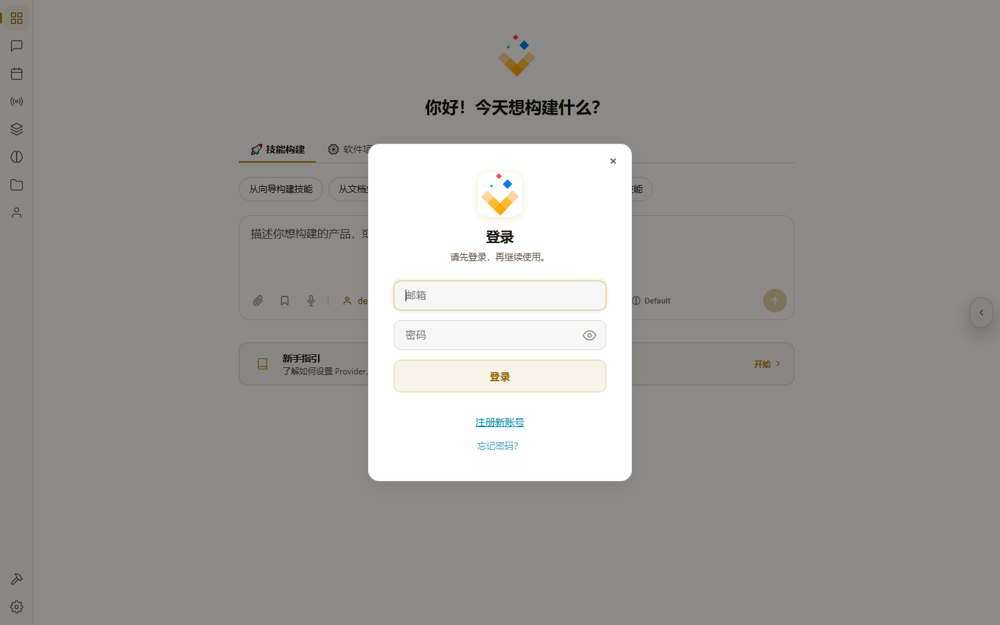

QBuilder 下载安装与账户注册
挑对系统的安装包,装好后启动并注册 QUSEIT 账号。
流程一览
整个过程分四段:
- 第 0 步:打开 下载页,根据你的操作系统选对应的 QBuilder 安装包。
- 第 1–3 步:按平台安装 — Windows 解压后双击安装包,macOS 在「隐私与安全」放行,Linux 用
sudo apt install。 - 第 4 步:启动 QBuilder Desktop,点 登录。
- 第 5 步:没账号点 注册,填邮箱密码 + 机构码(默认可填
C2372QJ2),完成后自动登录。
第 0 步 · 从下载页选对安装包
在下载页选对应操作系统的安装包
~1 分钟打开 quseit.com/download.html。页面下半部"桌面端下载"那一栏里有三张卡片,分别对应 Windows、Linux、macOS。按当前操作系统选一张,点卡片底部的下载按钮拿到压缩包。
第 1 步 · Windows 安装
解压压缩包 → 双击安装包
~3 分钟Windows 版是 .zip 压缩包,先解压再装。在下载目录里右键 QBuilder-Setup-<最新版本>-Windows.zip → 全部解压,你会看到 QBuilder-Setup-<最新版本>.exe。
1.1 解压后双击安装包
双击 QBuilder-Setup-<最新版本>.exe,弹出 "你要允许此应用对设备进行更改吗?" 的 UAC 提示时,点 是。
1.3 走完安装向导
安装器会依次弹:
- 许可协议 — 勾选同意,下一步。
- 安装目录 — 默认
C:\Program Files\QBuilder,可以改,但新手保持默认最稳。 - 快捷方式 — 桌面 + 开始菜单都勾上,下一步。
- 点 安装,等进度条走完。
- 勾选 启动 QBuilder,点 完成。
第 2 步 · macOS 安装
先允许该程序运行,再启动
~3 分钟先确认芯片再下载: 下载页的 macOS 按钮点开会展开两项,Apple Silicon 芯片选 arm64、Intel 芯片选 x64。不确定就看左上角 苹果菜单 → 关于本机 → 芯片那一行 — 写着 "Apple M…" 是 Apple Silicon,写着 "Intel" 则是 Intel。
2.1 启动 macOS 版 QBuilder 一次
从下载的 .dmg 拖入 /Applications 后,双击 QBuilder.app 启动一次。系统会弹"QBuilder 是从互联网下载的 App,您确定要打开吗?"或 "无法打开,因为 Apple 无法检查其是否包含恶意软件",点 取消(先不要强行打开)。
2.2 打开「设置 → 隐私与安全」放行
打开 系统设置(macOS 13+) / 系统偏好设置(macOS 12) → 隐私与安全。向下滚到页面底部,你会看到一行 "QBuilder 已被阻止打开,因为它不是来自已识别的开发者",旁边有 仍要打开 按钮,点击它。
2.3 再次启动 QBuilder
回到 Finder 双击 QBuilder.app,系统会再问一次指纹 / 密码,确认后 QBuilder 就启动了。之后这个应用会被系统记住,以后双击直接启动,不再问。
第 3 步 · Linux 安装
用 apt 直接装
~3 分钟(Linux 包暂未发布,以下为发布后的标准路径。)
Linux 版以 .deb 包形式分发,使用系统包管理器安装。
3.1 确认发行版
QBuilder 当前支持 Ubuntu / Debian 系(含 Ubuntu 22.04+、Debian 12+)。其它发行版可以用 .deb 工具转 .rpm 等,但官方仓库暂未覆盖。
3.2 用 apt 安装
把下面命令里的 <最新版本> 换成下载页上标注的当前版本号即可。
# 1. 下载安装包(到 ~/Downloads)
cd ~/Downloads
wget https://quseit.aipy.org/qbuilder/QBuilder-<最新版本>-1ubuntu1_amd64.deb
# 2. 装包(会自动解包依赖并放到 /opt/qbuilder)
sudo apt install ./QBuilder-<最新版本>-1ubuntu1_amd64.deb
# 3. 验证:二进制路径 + 版本
which qbuilder # /usr/bin/qbuilder
qbuilder --version # 期望输出 QBuilder <最新版本>3.3 启动 GUI
安装完后,从应用菜单点 QBuilder 图标启动 GUI 主进程,或在命令行直接跑 qbuilder。
第 4 步 · 启动 QBuilder 并点击「登录」
启动 QBuilder,点击「登录」
~30 秒从桌面快捷方式 / 开始菜单 / 应用程序目录 / 命令行启动 QBuilder,首次启动约 10–15 秒。进入主界面后,提示 「请先登录,再继续使用。」 — 点旁边的 登录 按钮,弹出登录对话框:
- 邮箱输入框
- 密码输入框(右侧有显示 / 隐藏密码的眼睛按钮)
- 登录主按钮
- 注册新账号链接 — 没账号就点这个
- 忘记密码?链接

第 5 步 · 注册(含机构码)
填邮箱 + 密码 + 机构码
~2 分钟点登录页右下角的 注册,会跳到注册表单。
5.1 基本字段
- 邮箱 — 用常用邮箱,作为你的登录账号。
- 密码 — 至少 8 位,字母 + 数字组合。
- 确认密码 — 再输一次。
- 显示名 — 出现在你发布的「智空间」顶部的名字,后续可在设置里改。
5.2 机构码 · 怎么填
注册表单里有一个 机构码(Organization Code) 字段,这是 QUSEIT 给推荐渠道(合作机构、企业内购、线下推广等)的合作识别码。
- 有推荐渠道:渠道方会告诉你他们的机构码,直接填他们的码。
- 没有推荐渠道:填默认机构码
C2372QJ2,不影响功能使用,只是不归属任何渠道。
5.3 提交注册
- 勾选 "我已阅读并同意《用户协议》和《隐私政策》"(链接会展开对应文档)。
- 点 创建账号 — 注册不需要邮箱验证,提交即完成。
- 系统自动登录,直接进入 QBuilder Desktop。
下一步 · QBuilder 控制面板怎么用
注册完成后,你已经在 QBuilder Desktop 里。下一站建议读:
- QBuilder Desktop 控制面板完全指南 — 10 个核心模块(Dashboard / Chat / Tasks / Channels / Skills / Memory / Spaces / Agent profiles / Skill Studio / Settings)的逐个讲解。
- 5 分钟创建你的第一个智能体 — 走通「想法 → AI 多轮对话 → 编译 → 生成技能」全流程。
- 用 book-to-skill 把文档转为智能体技能 — 已有文档 / PDF?直接喂给 AI 让它抽技能。
常见踩坑
- 下载后没解压就双击 zip — Windows 默认会用资源管理器查看 zip,双击是预览不是解压。右键 → 全部解压。
- macOS 上双击 .dmg 后没把 App 拖入 /Applications — 拖进去才算"安装",不然 .dmg 卸载后 App 也消失了。
- Linux 用
dpkg -i装 .deb — 缺依赖时 dpkg 不会自动拉,要手动apt install -f。直接用sudo apt install ./xxx.deb让 apt 一把搞定。